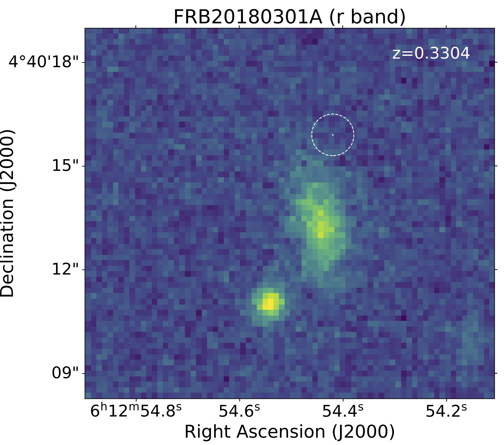

FRB 20180301A
Image from Bhandari et al., 2021 (ArXiv: 2108.01282)
Summary
- Detected by: Parkes
- FRB coordinates (RA, Dec): 06:12:54.42 +04:40:15.9 (J2000)
- Host coordinates (RA, Dec): 06:12:54.44 +04:40:13.7 (J2000)
- Redshift: 0.3304
- Observed DM: 536 ± 10 pc cm-3
- Repeating: Yes
- References: Bhandari et al., 2021 (ArXiv: 2108.01282)
Host galaxy properties
| Quantity | Measured value | Unit |
|---|---|---|
| Stellar mass | (0.23 ± 0.06) × 1010 | M⊙ |
| Star-formation rate | 1.93 ± 0.58 | M⊙/yr |
| Metallicity | 8.70 | 12+log(O/H) |
| Absolute r-band mag. | -20.18 ± 0.07 | mag |
| u - r color (rest-frame) | 0.90 ± 0.11 | mag |
| Half-light radius | 5.80 ± 0.20 | kpc |
| FRB offset from galaxy center | 10.8 ± 3.0 | kpc |
Emission line fluxes
| Emission line | Measured value |
|---|---|
| Hα | 16.97 ± 0.18 |
| Hβ | 7.77 ± 0.61 |
| [OIII] λ 5007 | 12.75 ± 0.65 |
| [NII] λ 6584 | 4.32 ± 0.32 |
| Telescope | Filter (eff. wavelength) | Magnitude (AB) |
|---|---|---|
| NOT | u (350 nm) | 21.45 ± 0.30 |
| NOT | g (480 nm) | 21.40 ± 0.09 |
| NOT | r (625 nm) | 21.04 ± 0.06 |
| NOT | i (770 nm) | 20.99 ± 0.06 |
| NOT | z (840 nm) | 20.59 ± 0.11 |